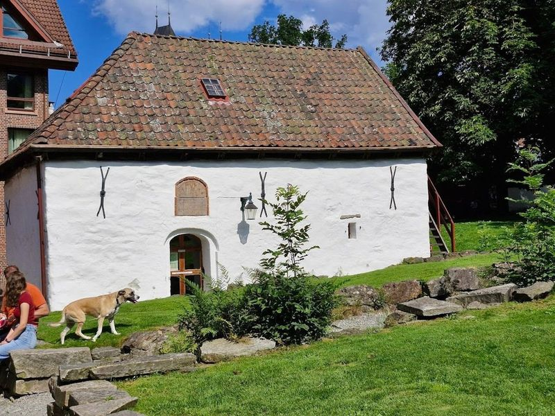
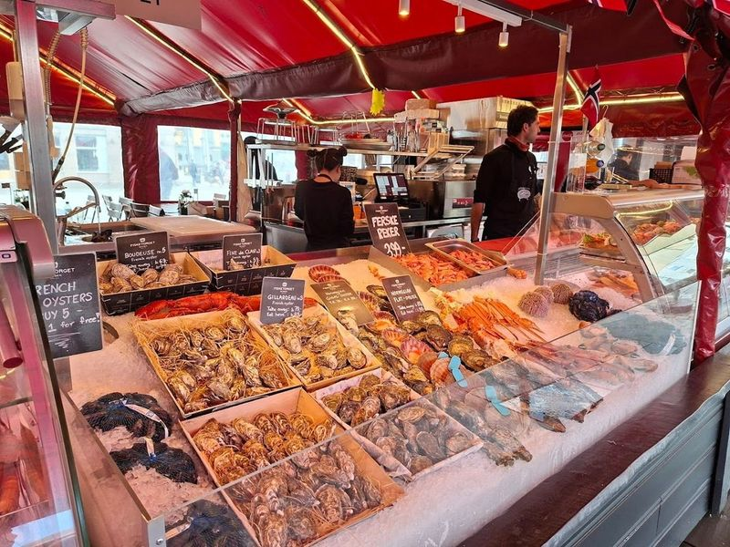
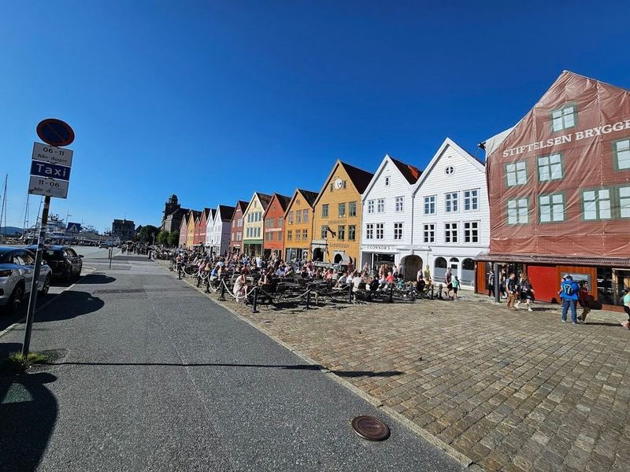
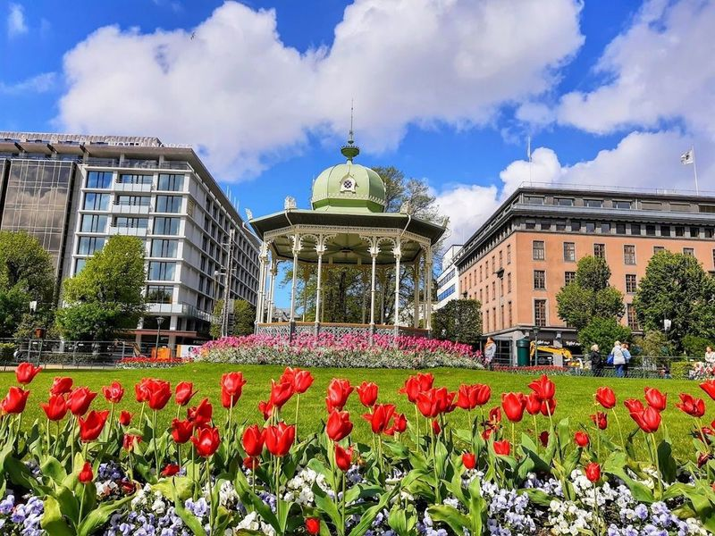
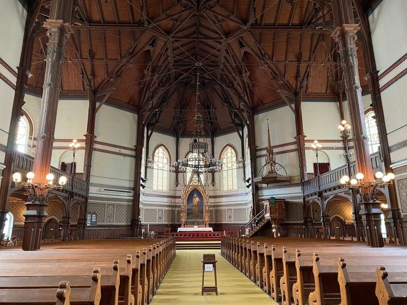
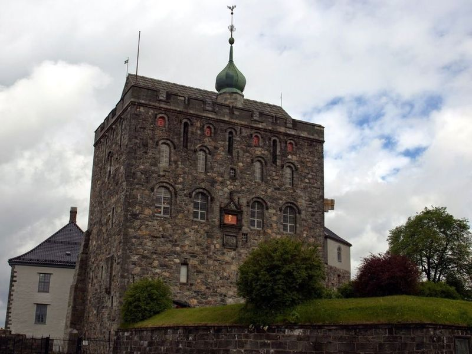
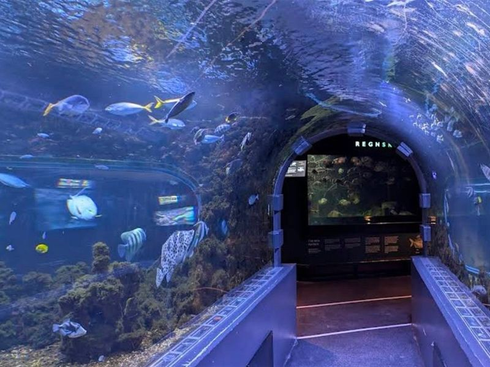
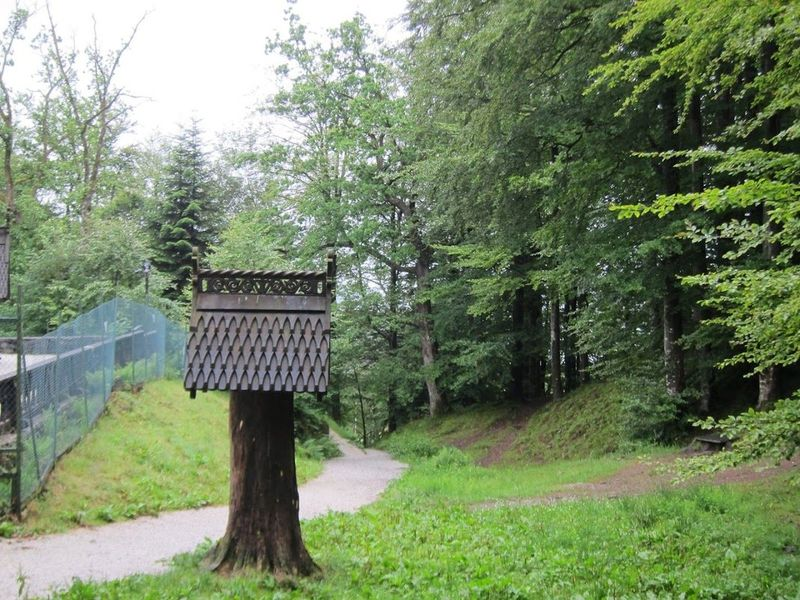
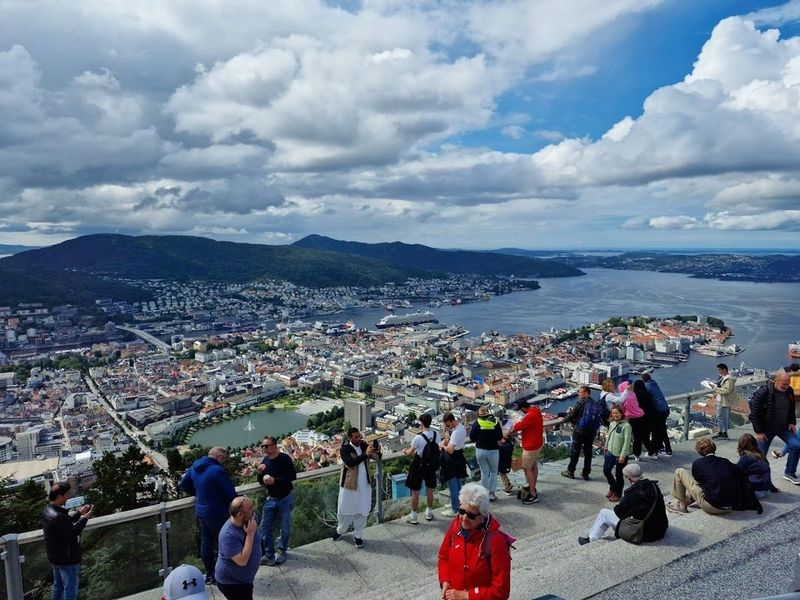
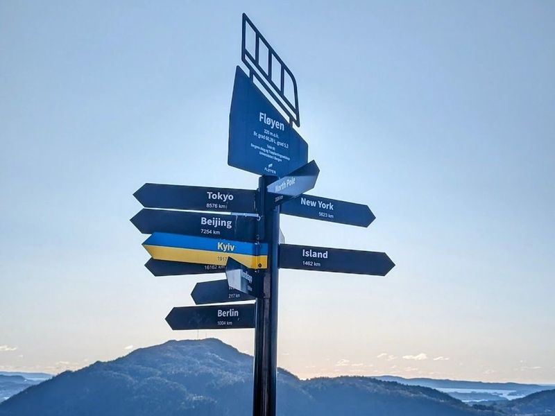

Explore Bergen
A Brief History
Bergen was founded around 1070 and served as Norway's medieval capital and a leading Hanseatic kontor from the 14th century. Bryggen wharf warehouses, the harbour, and surrounding seven mountains record North Sea trade in stockfish and later shipping industry. As western Norway's largest city, Bergen links fjord tourism with a long record of seafaring, commerce, and civic institutions.
Attractions Map
Top Sights & Activities

Bryggen
Bryggen, also known as the Hanseatic Wharf, is a medieval wharf located in Bergen's historic harbor district. It is famous for its colorful wooden-clad boat houses and is a testament to the legacy of the Hanseatic League's trading empire dating back to the 14th century. Despite being ravaged by fires numerous times over the centuries, Bryggen remains an attraction and is protected as a UNESCO World Heritage Site.

Fishmarket in Bergen
Bergen Fish Market is the place to go if you're looking for fresh seafood. It's located in Bryggen, which is a UNESCO World Heritage Site, and it has been a popular tourist destination since the Middle Ages. The market is open every day except Sunday and it's always bustling with people sampling the delights available. Travelers can also take advantage of the numerous transportation options that connect Oslo with Trondheim, including the Bergen Railway and the Dovre Railway.

Bergen Tourist Information
The Bergen Tourist Information Building, conveniently located near the Fish Market in the city center, is a one-stop destination for all your travel needs. From booking activities and fjord tours to purchasing tickets for Bergen attractions or the Bergen Card, this place has got you covered. Additionally, visitors can enjoy free presentations about Bergen and the region.

Festplassen
Festplassen is a recreational square that offers views of Bergen's central lake and fountain, making it the perfect spot for fun fairs and festivals. The park provides a serene escape from the city, with opportunities to enjoy live music in the summer and visit the twinkling Christmas Market in winter. Situated near the University of Bergen, this area also features interesting buildings to explore.

St. John's Church
St. John's Church is a significant Gothic-revival Catholic church located in Bergen, Norway. It stands on a small hill south of Bergenhus, the city's central district. The church features a striking red brick facade in late 19th-century Gothic style and houses a beautiful interior with Nordic architectural elements, including minimal decorations, geometric motifs, an organ, and stained glass windows.

Bergenhus Fortress
Bergenhus Fortress, dating back to 1240, looms over the Bergen Harbour entrance and has served as a protective stronghold for centuries. While only a medieval hall and defensive tower remain, it is still in use by the Royal Norwegian Navy. Visitors can explore Haakons Hall and climb the Rosenkrantz Tower, which offers views of the harbor. The fortress also houses a museum showcasing Bergen's history during WWII.

Akvariet i Bergen - The National Aquarium
If you're looking for an exciting family-friendly adventure in Bergen, the Akvariet i Bergen - The National Aquarium is a must-visit destination. Nestled on the picturesque Nordnes Peninsula, just a short stroll from the city center, this aquarium boasts over 60 impressive tanks showcasing a diverse array of marine life. From vibrant tropical fish to fascinating Arctic species like penguins and seals, there's something for everyone to marvel at.

Fantoft Stave Church
Fantoft Stave Church is a reconstruction of an early medieval wooden church that was originally built in 1150 and later destroyed in a fire in 1992. The church showcases the careful ornamentation typical of Norwegian stave churches, with intricate designs and carved dragon heads. Despite being a replica, it remains a example of early Norwegian art and heritage.

Fløibanen Upper Station
Fløibanen upper station is a must-visit destination for anyone exploring Bergen. This charming funicular ride offers an exhilarating journey to the top, where visitors are greeted with panoramic views of the city and its natural surroundings. The ride itself is smooth and accessible, making it perfect for families with small children or those using strollers and wheelchairs.

Fløyen
Mount Fløyen is a forested mountain in Norway, offering a variety of activities for nature enthusiasts. Visitors can take the Floibanen funicular for a quick 6-minute ride to reach the summit at 320 meters above sea level, providing views of the city and fjord below. The mountain features hiking trails, including a troll forest, allowing hikers to immerse themselves in pristine landscapes and serene surroundings.